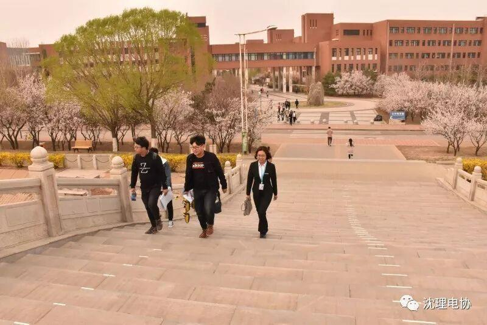
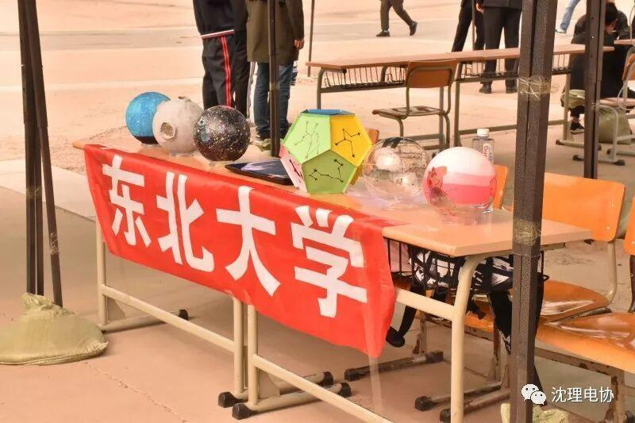
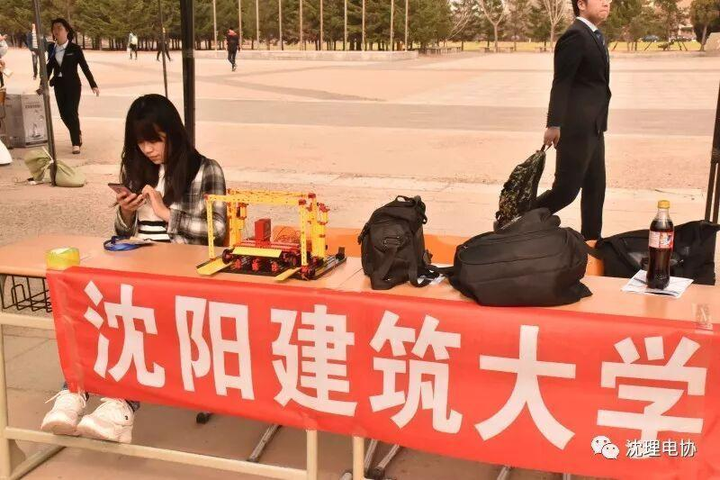
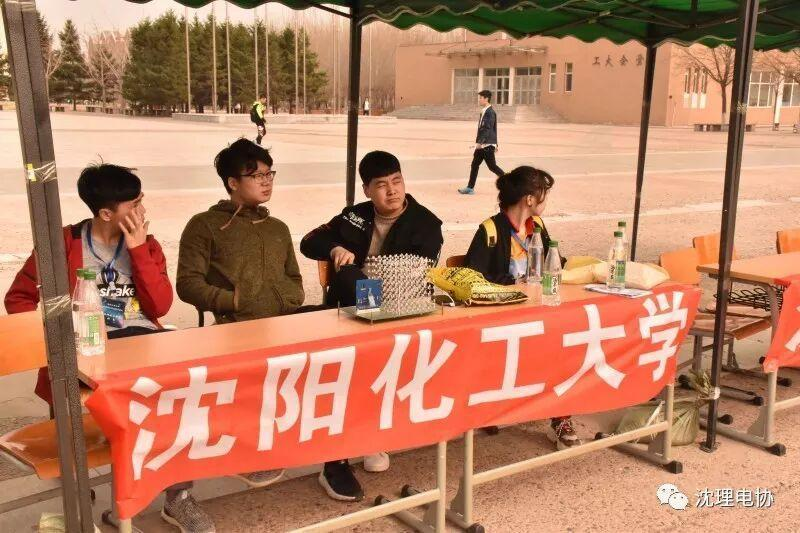
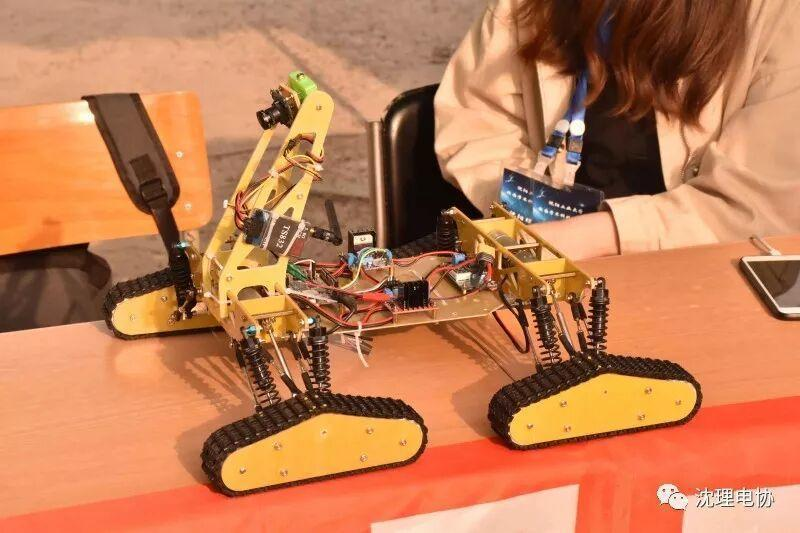
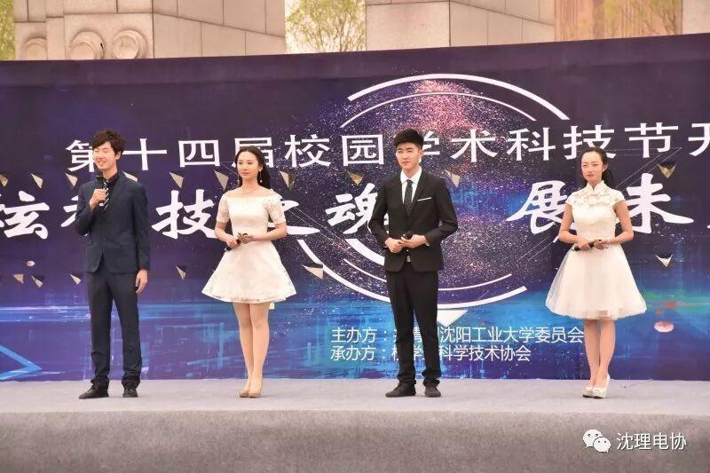
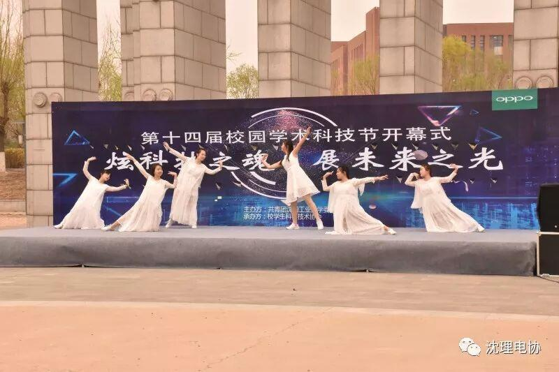
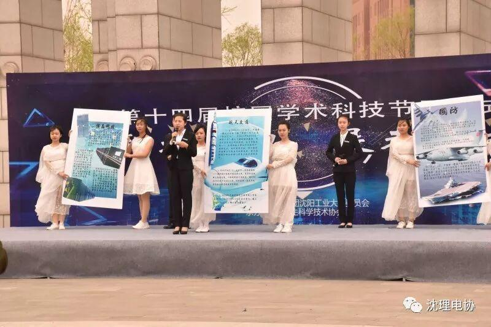

参加沈阳工业大学校园学术科技节开幕式
参加沈阳工业大学
校园学术科技节开幕式
春风吹红了桃花，吹绿了大地
四月十八日电协再次有幸受邀出席
沈阳工业大学举办的一年一度的
校园学术科技节开幕式

会长王枭，副会长刘舒宇等人在沈工大科协外联部的同学的带领下进入校园，并在途中了解此次活动的概况。
同时受邀参加此次活动的还有东北大学，沈阳建筑大学，沈阳化工大学，各所大学都带来了一些自己的科技作品，展现自己的技术与风采。



当然，我们也带去了我们的作品——全地形多功能履带越野车。

观看展品之余工业大学还准备了一系列的游园游戏项目和一些舞蹈节目。




此次活动不仅为沈阳各大高校提供了技术交流的机会，也是一个交朋友好时机，在这里可以认识一群志同道合的同龄人，大家都在做着相同的事，所以希望这样的活动也会越来越多，越办越好。

编辑| 刘 聪